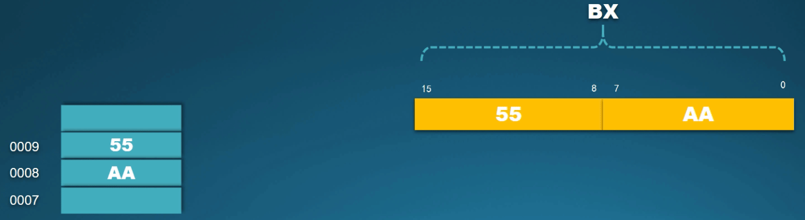
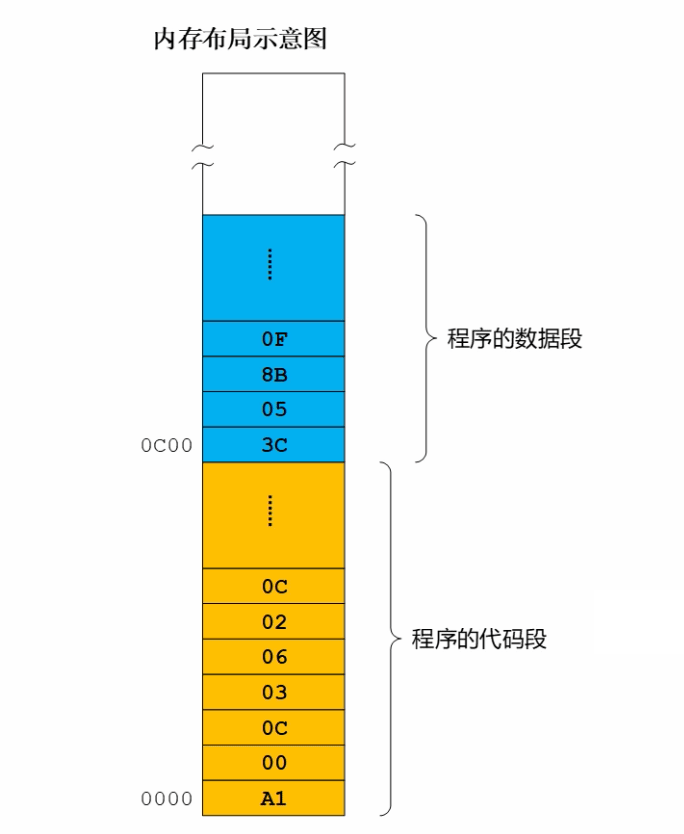
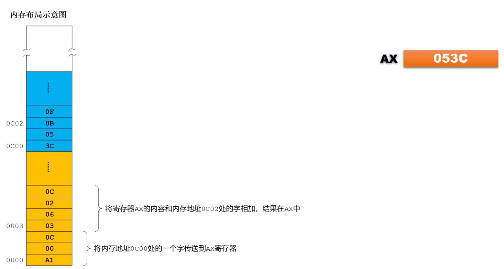
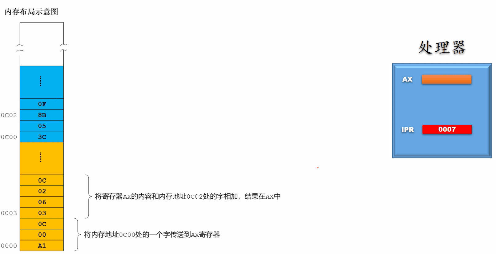
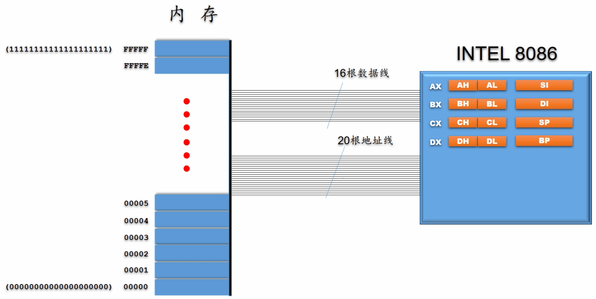
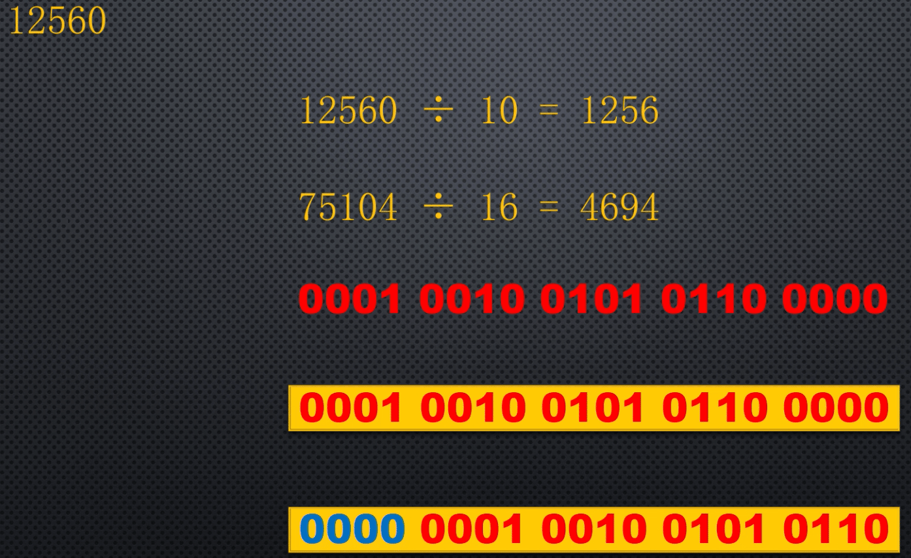
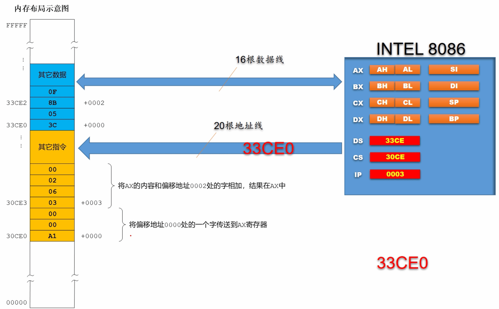
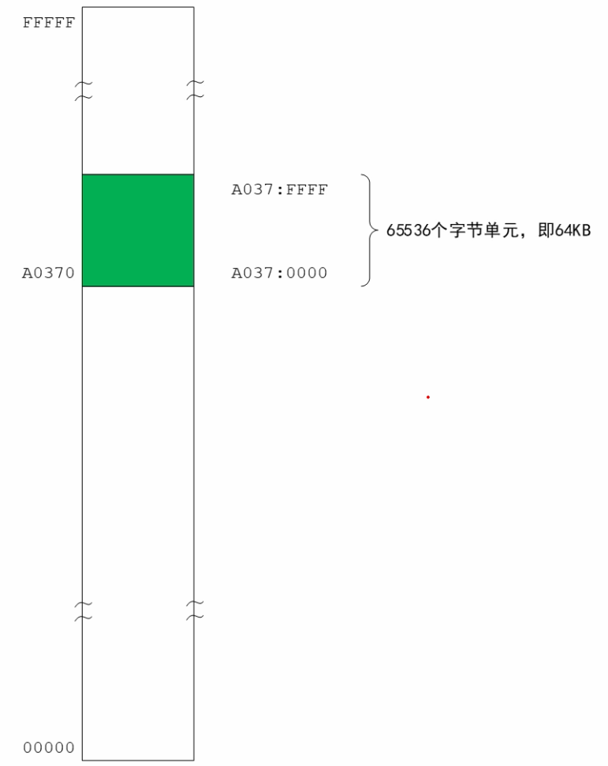
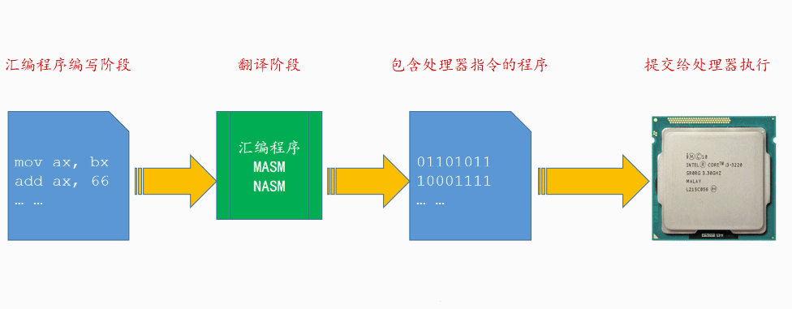

认识 8086 处理器
- TAGS: Assembly
主要内容
- 认识 8086 处理器
- 汇编语言和汇编软件
- 如何执行编译好的程序
认识 8086 处理器
主要内容
- 8086的通用寄存器
- 8086的内存访问和字节序
- 程序的分段
- 程序的重定位难题
- 段地址和偏移地址
- 8086内存访问的困境
- 8086选择段地址的策略
- 8086的内存访问过程
- 逻辑地址和分段的灵活性
8086的通用寄存器
认识 INTEL 8086 处理器内部的通用寄存器

在 INTEL 8086 处理器有 8 个十六位的通用寄存器。
AX{AH AL} SI
BX{BH BL} DI
CX{CH CL} SP
DX{DH DL} BP
通用的意思是它们可以根据需要可以用于多种目的。比如，可以在这些寄存器之间互相传递数据或者做各种算术逻辑运算；可以在这些寄存器和内存之间传递数据或者做各种算术逻辑运算。

这 8 个寄存器都是 16 位的，由 16 个比特组成。为了方便描述每个比特都有一个编号，从右往左依次为 0、1、2、3、4、5、6、7、8、9、10、11、12、13、14、15，其中最右边的比特叫 最低位 ，最左边的比特叫 最高位 。
16 位的寄存器可以保存 16 位的二进制数。如上图所示，寄存器保存了一个二进制数 0101 1010 1100 00011，等于十进制的 23235，等于十六进制 5AC3

使用二进制很不方便也很不直观，所以以后不再用二进制来表示数值，这样很麻烦。而是使用上图中的方法。这里寄存器用一个矩形来表示，寄存器的内容用十六进制给出，比如这里是 5AC3。
为什么计算领域的人都偏爱十六进制呢？
从一个十六进制数可以很容易知道二进制形式，反过来从一个二进制数很容易看出它的十六进制形式。如
# 2 进制转 16 进制 1000010100101111 # 16 个比特 将它从右往左分成 4 个 4位 1000 0101 0010 1111 # 右边的 4 位 1111 对应 16进制的 f，0010b = 2H，0101 = 5H，1000 = 8H 852f # 16 进制转 2 进制 3C09 只需要将每个 16 进制数写成 4 位 2 进制数。 9H = 1001b，0H = 0000，CH = 1100，3H = 0011 0011110000001001
使用 十六进制特别简短明了 ，这是我们为什么偏爱十六进制的原因。
在 8086 中，通用寄存器的前 6 个也就是 AX/BX/CX/DX 又各自可以拆分成两个 8 位的寄存器来使用，总共 8 个 8 位的寄存器，他们分别是 AH/AL ， BH/BL ， CH/CL ， DH/DL 。这样一来，当需要在寄存器与寄存器之间、寄存器和内存之间进行 8 位的数据传送或者 8 位算术逻辑运算时，使用它们就很方便。

范例： 寄存器 AX 的组成：高字节、低字节
AX
AH AL
15 ... 8 7 ... 0
--------- -------
高字节 低字节
AX 可以分成两个独立的寄存器 AH，AL。位 0 到位 7 这个 8 个比特属于 AL。从位 8 到位 15 这 8 个比特属于 AH。
在计算里一个字等于两个字节，因此 AX 长度为一个字 (16个比特)，寄存器 AH 是寄存器 AX 的 高字节 部分，寄存器 AL 是寄存器 AX 的 低字节 部分。
范例： 寄存器 AX 的值
AX
AH AL
--------- -------
3E 2F
寄存器 AX 是由寄存器 AH 和 AL 组成，所以寄存器 AX 的值也是寄存器 AH 和 寄存器 AL 组成的。上例中 AX 的值是 3E2F，改变 AH 的值(00)对寄存器 AL 没有影响，但寄存器 AX 值会跟随改变，变成 002F。
练习
INTEL 8086 有哪几个通用寄存器？这些寄存器的长度是多少？
答：AX/BX/CX/DX/SI/DI/BP/SP 这 8 个通用寄存器。长度都 16 位的，长度是 1 个字，合两个字节。
以上寄存器中，有哪些可以分为两个8位的寄存器来用？这些8位的寄存器叫什么名字？
答：AX/BX/CX/DX 可以分成两个 8 位的寄存器。分别叫 AH,AL/BH,BL/CH,CL/DH,DL
如果向寄存器 DH 写入数字 08(十六进制)，向寄存器 DL 写入数字 3C(十六进制)，则寄存器 DX 值是多少(用十六进制表示)？
答：DX 是由 DH(高字节部分) 和 DL(低字节部分) 组成，AX 的值为 083C
8086的内存访问和字节序
了解8086如何访问内存以及内存访问的字节序

intel 8086有16根数据线，这16根数据线与内存相连可以向内存写数据或者从内存中读数据，它是双向的。
数据线的宽度和8086寄存器的宽度一致都是16位的。
以寄存器SI为例，这是16位寄存器，比特编号从0到15. 这里寄存器保留了C05B这个数。如何将它写入内存？
内存写入

内存是由字节单元组成，字节单元长度都是8位的。可以将16位的数据拆开分成2个8位的数据，分别写入2个相临字节单元。
假定在写入内存时，指针的地址是0002，寄存器SI的内容C05B通过16位数据线到达内存后被拆分成2个8位，其中C0是高字节部分，5B是低字节部分。 5B被写入到0002的单元，C0被写入到0003的单元。地址为0002的单元是低地址单元，地址为0003的单元是高地址单元。
当我们写入一个字时，如果低字节写入内存的低地址单元，高字节写入内存的高地址单元，那么我们称之为是 低端字节序 的。
内存读取
读的时候也是一样。如果是从内存地址为0002的地址开始读取一个字并传送到寄存器SI中，低地址单元中的5B和高地址单元中的C0被分别取出，然后 在数据线上合并成一个字C05B，最后传送到寄存器SI。


范例：寄存器AX中数据8D写入读取
- AH，AL是8位寄存器，AH内容为8D,写入内存地址0002单元
- 数据线宽度是16位的，只使用一半。通过16根数据线的一半写入内存。
- 写入地址为0002的单元
- 读出，从地址为0002的单元读取一个字节并传送到寄存器AL中
- 这个地址单元中的8D通过16根数据线中的一半被送出
- 传送到寄存器AL
练习
寄存器BX的内容是55AA(十六进制)，在将它写入内存时，指定的地址是0008，低端字节序。 那么写入后，将占用几个内存单元？它们的地址分别是多少？它们的内容是什么(采用十六进制)？
答案：占用2个内存单元。地址分别为0008，0009. 地址为8的单元是AA, 地址为9的单元是55
采用低端字节序写入内存时，低字节占据内存低地址部分，高字节占据内存高地址部分。它们的内容是AA55

程序的分段
了解程序在内存中是如何分段存放的
处理器是自动取指令和执行指令的器件。为了解决问题我们需要编排指令，这个过程叫做编程。编程的结果是生成了一个 程序。如下图在内存中编排了一个程序，这个程序是从内存地址为0地方开始存放的。

代码段
处理器是按顺序取指令并执行指令的，所以指令必须是按顺序一条条集中存放。图中黄色部分是集中存放的指令。
这此指令集中在一起形成了程序的代码部分或者指令部分，由于这些代码在内存里占用了一个连续的区段，所以我们称之为程序的代码段。
从图中看出，这个代码段的起始内存地址是0。
数据段
指令在执行时需要用到数据，这些数据也是放在内存中的。图中蓝色部分是集中存放的数据。这些数据集中在一起形成了程序的数据部分，由于这些 数据在内存里占用了一个连续的区段，所以我们称之为数据段。图中数据段在内存中的起始地址是0C00
程序的指令
通常来说，指令是由操作码和操作数据组成。
对处理器来说，操作码隐含了如何执行该指令的信息，如指令是作什么的以及怎么去做。

第一条指令
- 第1条指令是从内存地址为0位置开始存放的，一共3个字节。
- 其中第1个字节的A1是操作码，隐含3个方面信息。
- 这条指令是传送指令
- 被传送的目标位置是AX寄存器
- 被传入的数字位于内存中的另一个地方，它的地址是16位的，2个字节，而且是紧跟在操作码后面。
- 操作码A1后面是2个字节，00和0C, 共同组成了一个地址。8086处理器是低端字节序的，所以这个地址是0C00
- 第1条指令的功能是将内存地址0C00处的一个字传送到AX寄存器中。
- AX寄存器的字长是16位，所以这条指令在执行时将再次访问内存，从内存地址0C00处取得一个字，这2个字节是3C05, 他们将合并成一个16位数字053C, 然后再传送给AX寄存器。
- 寄存器AX内容是053C
第二条指令
- 第2指令是从内存地址为0003的位置开始存放的。一共4个字节。
- 其中前2个字节0306是操作码，所隐含的信息是
- 这条指令是加法指令
- 第1个相加的数字位于AX的寄存器里，而且相加的结果也保存在AX寄存器
- 第2个相加的数字位于内存中另外一个地方，它的地址跟在操作码后面，是由2个字节组成的。
- 操作码后面2个字节是02和0C，共同组成一个16位地址。因为8086处理器是低端字节序的，所以这个地址是0C02
- 第2条指令的功能是，将寄存器AX的内容和内存地址0C02处的字相加，结果在AX中。
- 这条指令在执行时，将再次访问内存。从内存地址0C02处取出一个字0F8B，然后将0F8B和寄存器原有的数字053C相加，相加的结果保存在AX中，结果是14C7。
程序的重定位难题
研究一个有关程序重定位的困境
为了自动的取指令和执行指令，处理器需要一个寄存器来自动跟踪每条指令，假定它的名字叫IPR, IPR的内容始终是下一条要执行的指令。

上图中
- 在程序开始之前，我们需要将第1条指令传送到这个寄存器IPR。这程序是从内存地址为0的地方开始存放的，寄存器IPR内容为0000。
- 当程序开始执行时，处理器把IPR的内容放到地址线上，第1次发出的地址是0，所以是从内存地址为0的地方取出第1条指令并加以执行
- 第1条指令的内容是，将内存地址0C00处的一个字传送到AX寄存器。与此同时IPR的内容被自动更新为下一条指令的地址0003。下1条指令地址 = 当前指令的地址+当前指令的长度。3 = 0 + 3
- 第2条指令同理，第1条指令执行后，再用IPR中的内容到内存中取指令并执行。与此同时IPR的内容被自动更新为下一条指令的地址0007。 7 = 当前指令地址3 +当前指令长度 4
- 以此类推
如果程序在内存中的地址不是从同0000开始的，就有出现问题。 因为内存中数据的地址是写死的，使用了绝对内存地址，如第1条指令的0C00和第2条指令的0C02这些是物理地址。
要解决这样的问题，需要在程序加载之后临时改变其位置，这样做是很不合理的，因为一个程序的指令少则几十条多则百万千万条。
能够重定位，这是对程序的基本要求。
段地址和偏移地址
通过引入数据段寄存器来解决程序的重定位问题
我们说过指令中不能使用物理地址，否则程序无法重定位。

先来观察数据段，
- 数据段的起始地址是1C00，这个地址也是段内第1个字053C的地址。换一个角度看，段内第1个字053C和数据段内起始位置的距离是0个字节，所以可以说第1个字053C距离段起始处的偏移量是0.
- 段内第2个字0F8B，他的物理地址是1C02。换一个角度看，这个字和数据段起始位置的距离是2个字，所以可以说这个字距离段起始处的偏移量是2.
因为这个原因，在数据段内每个字都有2个属性，分别是他们的物理地址1C00和1C02，另一个是他们相对于段起始处的偏移量0和2。我们把这些字相对于段起始处的偏移量叫做 偏移地址 。

这2个字的偏移地址分别是0000和0002，同时把偏移地址标注在这2个字的右侧并且用 + 加号来表明他们是偏移地址。
代码段中的指令也做了修改
- 第1条指令，原先的物理地址换成了第1字的偏移地址0000。 意思是将偏移地址为0000处的一个字传送到AX寄存器。
- 第2条指令，原先的物理地址改成了第2字的偏移地址0002。意思是将寄存器AX的内容和偏移地址为0002处的字相加，结果在AX中。
为了配合这种改变，我们在处理器中增加了 数据段寄存器DSR . DSR保存了数据段的起始物理地址。
- 程序开始前，先将第1条指令的物理地址传送到 指令指针寄存器IPR ，1000，
- 将数据段的起始物理地址传送到数据段寄存器DSR, 1C00
- 处理器开始取指令并执行指令，第1条指令
- 先用IPR的内容发出地址1000，访问内存取得第1条指令，“将偏移地址为0000处的一个字传送到AX寄存器”
- 在执行指令时，访问内存需要用到数据段寄存器DSR，此时是将DSR中的内容1C00和指令中的偏移地址0000相加，得到物理地址1C00。于是处理器将1C00做为地址发送给内存，从内存地址1C00处取得一个字053C，传送给AX寄存器。
- 与此同时IPR的内容被自动更新为，下1条指令地址，1003
- 第2条指令
- 处理器利用IPR的内容1003，访问内存取得第2条指令，“将寄存器AX的内容和偏移地址为0002处的字相加，结果在AX中”
- 在执行指令时，访问内存需要用到数据段寄存器DSR，此时是将DSR中的内容1C00和指令中偏移量0002相加，得到物理地址1C02。于是处理器用1C02访问内存，从内存地址1C02处取得一个字0F8B，最后将0F8B和寄存器中原有内容053C相加，结果存回AX寄存器。
经过这样的软硬件改造后，程序不用做任何修改就可随便放到内存中任何位置加以执行都没有任何问题。
8086内存访问的困境
了解intel 8086处理器因硬件设计的特点而在访问内存时所面临的挑战

8086有16根数据线，一次最大可以访问16位，也是就2个字节数据，或都一次最大可以访问1个字。
为了访问内存，还需要地址线和内存相连来指定访问的是哪个内存单元。8086有20根地址线。可以表示20位2进制数，最小内存地址20个0(十六进制00000)，最大内存地址20个1(十六进制FFFFF)。
20根地址线可以访问的内存数量是， \(2^20=1048576=1024KB=1MB\) ,

要取指令和数据就必须发出地址。intel 8086处理器内部集成了一些和内存访问有关的寄存器。
- 代码段寄存器CS：用于存放代码段的起始物理地址。通过代码段寄存器CS可以跟踪每一条指令的地址。处理器可以利用它实现自动取指令执行指令。
- 数据段寄存器DS：用于保存数据段的起始物理地址。在指令执行期间，数据段寄存器中的内容和指令中的偏移地址相加，就得到了物理地址，通过这个物理地址就可以取得操作数。
但是这些寄存器的宽度都是16位的，容纳不了20位的内存地址。
8086选择段地址的策略
了解intel 8086处理器在选择段地址时所采取的策略和方法
我们已经知道程序在内存中是分段的，8086处理器中有代码段寄存器CS和数据段寄存器DS，他们用来保存代码段的起始地址和数据段的起始地址。但他们都是16位的，无法容纳20位物理地址。
我们发现，有些内存地址的16进制形式是以0为结尾的，如0000, 00010, 00020, A0000,FFFF0等。如果将这些地址末尾的0去掉，剩下的部分就可以放到段寄存器里了。

12560 12560 / 10 = 1256 #16进制运算 75104 / 16 = 4694 #10进制运算 0001 0010 0101 0110 0000 0000 0001 0010 0101 0110 #右移4位

在8086系统中，由于段寄存器的限制，并不是所有内存地址都可以成为段地址，只有那些以0为结尾的内存地址才可能成为段地址。
上图中
- 程序的代码段起始于30CE0，将末尾的0去掉，剩下的30CE就可以传送到代码段寄存器CS中
- 程序的数据段起始于物理地址33CE0，将末尾的0去掉，剩下的33CE就可以传送到数据段寄存器DS中
- 再用段寄存器中的内容访问内存时，可以再把末尾的0加上，就是还原到原先的20位物理地址。也可以说是左移4位或者乘以16。
第1条指令起始物理地址是30CE0，长度是3个字节。在第1条指令执行期间，处理器必须把代码段寄存器CS改为第2条指令内存的地址30CE3。但是CS的长度是16位存不下，也不能把末尾的3去掉。如何解决？
8086的内存访问过程
8086处理器用段地址和偏移地址访问内存的过程
仅仅依靠段寄存CS是无法取指令的，因为它的宽度不够只有16位。
我们知道，在代码段内每1条指令都有他的物理地址，还有一个相对段起始处的偏移地址。8086处理器在内部集成了一个 指令指针寄存器IP ，用于保存指令的偏移地址。



跟踪程序的执行过程，来了解这些寄存器如何工作的，以及8086是如何取指令执行指令的
- 程序开始执行前
- 先把代码段的起始物理地址30CE0右移4位或者说把末尾0去掉，得到30CE并传送到代码段寄存器CS，此时段寄存器CS内容为30CE
- 把数据段的起始物理地址33CE0右移4位或者说把末尾0去掉，得到33CE并传送到数据段寄存器DS，此时段寄存器DS内容为33CE
- 把第1条指令的偏移地址0000，传送到指令指针寄存器IP，此时IP的内容为0000
- 第2条指令
- 处理器开始取指令阶段
- 首先，将段寄存器CS中的内容30CE左移4位，得到20位的数字30CE0
- 用30CE0和指令指针寄存器IP中的内容0000(数字0)相加，得到20位的物理地址30CE0，并送入地址线，去访问内存
- 这将从物理地址30CE0处取得第1条指令，并加以执行。指令的意思是“将偏移地址0000处的一个字传送到AX寄存器”
- 这将再次访问内存，在指令执行时访问内存需要用到数据段寄存器DS。此时是把段寄存器DS中的内容33CE左移4位得到33CE0，用33CE0和指令中的偏移地址0000相加得到20位物理地址33CE0，把这个地址送入地址线去访问内存。
- 这将从物理地址33CE0处得到一个字053C，然后送入AX寄存器。
- 与此同时，指令指针寄存器IP将修改为下一条指令的偏移地址0003，这个地址是用原有数字0与第1条指令长度3相加得到。
- 处理器开始取指令阶段
- 第2条指令
- 执行完第1条指令，处理器再次进入取指令阶段
- 将段寄存器CS中的内容30CE左移4位，得到20位数字30CE0。
- 用30CE0和指令指针寄存器IP中的内容0003(数字3)相加，得到20位的物理地址30CE3，并送入地址线，去访问内存
- 这将从物理地址30CE3处取得第2条指令，并加以执行。指令的意思是"将寄存器AX的内容和偏移地址为0002处的字相加，结果在AX中"
- 这将再次访问内存，在指令执行时访问内存需要用到数据段寄存器DS。此时是把段寄存器DS中的内容33CE左移4位得到33CE0，用33CE0和指令中的偏移地址0002相加得到20位物理地址33CE2，把这个地址送入地址线去访问内存。
- 这将从物理地址33CE2处得到一个字0F8B，将0F8B和寄存器AX中的内容053C相加，结果在AX中。
- 与此同时，指令指针寄存器IP将自动修改为下一条指令的偏移地址0007，这个数字是用原有寄存器IP里数字3与第2条指令长度4相加得到。
- 执行完第1条指令，处理器再次进入取指令阶段
逻辑地址和分段的灵活性
先引入逻辑地址的概念，再阐述8086处理器分段的灵活性
8086内存分段的原理，以0结尾的内存地址可以成为段地址。
逻辑地址

如图，将65C70到FFFFF看成一个段，段内内存单元的偏移地址分别为+0000，+0001，+0002….。为了方便地描述内存单元的地址和段地址的关系，推荐使用新的方法 来标注内存单元地址。如段内第1个内存单元地址为65C7:0000, 其中65C7是65C70末尾去掉0后的段地址，冒号后0000是它在段内偏移地址。用这种方法表示的地址 叫做 逻辑地址
#物理地址 逻辑地址(段起始地址:内存单元在段的偏移量) 65C75 65C7:0005 65C74 65C7:0004 65C73 65C7:0003 65C72 65C7:0002 65C71 65C7:0001 65C70 65C7:0000
在8086系统中，访问任何内存单元都是用段寄存器乘以16形成20位的段地址再和偏移地址相加。
如内存单元22567，转换成段地址和偏移地址，唯一的办法就是假定这个内存单元位于某个段中。
- 寻找以0结尾的物理地址
- 偏移量最大不超过寄存器宽度16位，即4个F。
22567 起始物理地址为22560的段，22567距离起始处相差7个字节，即16进制的7，逻辑地址2256:007 起始物理地址为22550的段，22567距离起始处相差23个字节，即16进制的17，逻辑地址2255:0017 起始物理地址为22540的段，22567距离起始处相差16进制的27，逻辑地址2254:0027 起始物理地址为22530的段，22567距离起始处相差16进制的37，逻辑地址2253:0037 ... 起始物理地址为12570的段，12570距离起始处相差16进制的FFF7，逻辑地址1257:FFF7 起始物理地址为12560的段，22567距离起始处相差16进制的10007，逻辑地址1256:10007 #非法，内存单元22567距离12560段首的偏移量大于FFFF

这是一个合法的段，段的起始物理地址是A0370，段内第1个内存单元的逻辑地址是A037:0000，最后一个内存单元的逻辑地址是A037:FFFF，这个段的长度是65536个字节(FFFF转10进制，2的16次方，65536)，即64KB。 这个段中最后一个单元的物理地址是多少？答案是用最后内存单元的逻辑地址求出，先将逻辑段地址A037乘以16得到A0370，再与逻辑偏移地址FFFF相加，得到B036F。也就是这个段起始于A0370终止于B036F。
练习
如果一个内存单元的逻辑地址是B800:0028，那么，这个内存单元的物理地址是多少？
答案：B8028 。 逻辑段地址B800*16得B8000，再与逻辑偏移地址0028相加，得B8028
如果一个内存单元的物理地址是B0375，请将它表示成三种不同的逻辑地址。
答案：离这个物理地址最近，且比它小的物理段地址为B0370、B0360、B0350。B0375与这三个物理段地址的距离分别为16进制的5、15、25。所以可以有B0370:0005, B0360:0015, B0350:0025
8086处理器可以访问1MB内存。在不浪费任何内存空间且不允许重叠的情况下，这1MB内存可以划分为多少个16字节的段？可以划分为多少个64KB的段？
答案：因为段必须起始于以0结尾的物理地址，而两个相邻的这种地址相差16个字节，比如段地址00000和00010之间相差16个字节。1MB内存有1048576个字节，除以16，结果是65536。所以1MB 内存可以均匀划分为65536个16字节的段。
1MB内存等于1024KB，如果段长度是64KB，那么1024除以64，结果是16。即1MB内存可以均匀划分为16个64KB的段。
汇编语言和汇编软件
主要内容
- 创建汇编语言源程序
- 下载和安装编译器NASM
- 编译汇编语言源程序
- 配套源码和工具的使用
创建汇编语言源程序
简单介绍汇编语言的特点以及如何创建汇编语言源程序

这些指令的意思
- 将立即数003F传送到AX寄存器
- 将BX的内容和AX的内容相加，结果在BX
将CX的内容和AX的内容相加，结果在CX
即使是很有经验的程序员使用这种方式编写指令是很困难的，而且很容易出错。所以汇编语言随之诞生。
- 汇编语言源文件后缀： .asm
- 内容不区分大小写
mov ax, 3fh #立即数003F传送到AX寄存器 add bx, ax #寄存器BX的内容与AX相加，结果在BX add cx, ax #寄存器CX的内容与AX相加，结果在CX
- 寄存器：ax, bx,cx
- mov传送指令，需要2个操作数，目的操作数、源操作数，之间用逗号分开。操作数可以是以h结尾的16进制数(如 3fh)或者0x开头的数。操作数可以是以B结尾的二进制数，操作数可以是10进制数。
mov ax, 3fh MOV AX, 3FH MOV ax, 3FH mov AX, 3fh #16进制3f mov ax, 0x3f #16进制3f mov ax, 63 #10进制63 mov ax, 00111111B #2进制 add bx, ax add cx, ax
下载和安装编译器NASM

用汇编语言编写的程序只是文本和符号，人类能看懂，处理器看不懂。需要通过汇编语言编译器将汇编程序转换成包含处理器指令的程序，提交给处理器执行。
汇编语言的编译器很多，如
- MASM 微软付费软件，太格式化
- NASM 免费使用
NASM官网：https://www.nasm.us/
64位系统下载地址：2.16.03
- 默认安装，安装目录可以自定义
- nasm.exe 执行文件
- nasmdoc.pdf 帮助文档
编译汇编语言源程序
配套源码和工具的使用
如何执行编译好的程序
主要内容
- 8086加电或者复位时的状态
- 8086地址空间的分配
- 跳转指令
- 硬盘的构造和工作原理
- 一切从主引导扇区开始